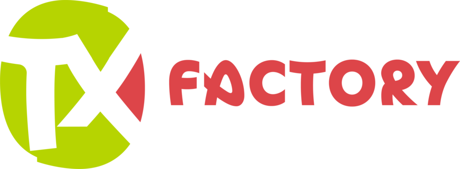
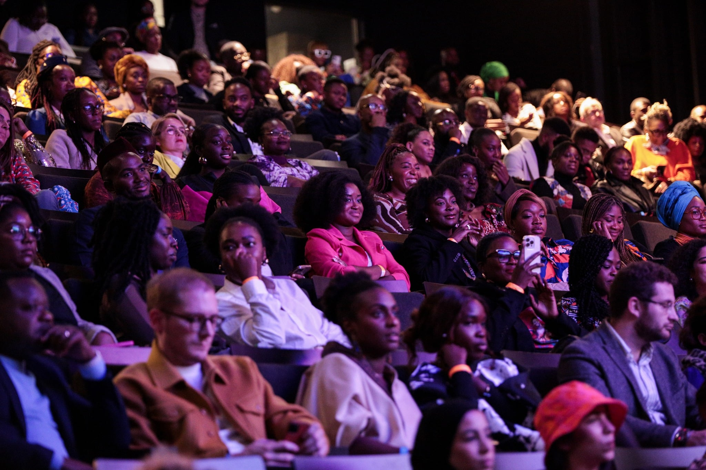

Totem Experience conçoit, produit et diffuse les contenus qui font parler les marques en Afrique francophone, avec les créateurs que votre public suit déjà.
Ils nous ont confié leur marque
Vous avez un seul interlocuteur pour penser la campagne, fabriquer les contenus et les faire circuler. Personne ne se renvoie la balle entre l'agence, le studio et les influenceurs.
L'agence digitale : la stratégie, les réseaux sociaux, l'influence et la publicité en ligne, pilotées sur plusieurs pays à la fois.

Le studio de création : concepts originaux, web-séries, formats courts et vidéos de marque, écrits pour l'usage qu'en fera votre public.
Chaque année à Abidjan, ADICOM Days réunit marques, créateurs, entrepreneurs et responsables marketing autour de ce qui marche vraiment.
Chaque cas raconte le problème de la marque, ce que nous avons proposé et ce que ça a donné.

Une quinzaine de créateurs ivoiriens mettent en scène les livreurs et partagent les codes promo.

Un guide de voyage d'une Afrique chic, raconté par des influenceurs du continent.

Shooting et portraits de femmes noires : plus de 22 000 réactions.
Une campagne réussie commence par une bonne question, pas par un devis.
Votre objectif, votre public, vos pays, votre calendrier. Un premier échange de 30 minutes suffit.
Un concept, les créateurs qui l'incarnent, les formats et le budget, dans une recommandation claire.
Tournage, écriture, visuels : le studio fabrique, l'agence orchestre la diffusion pays par pays.
Portée, réactions, clics, ventes quand on peut les suivre. Vous savez ce que chaque franc a rapporté.
Depuis la première édition à Paris, ADICOM Days réunit les créateurs de contenu, les entrepreneurs du digital, les marques et les responsables marketing de la région.
La 10e édition s'est tenue à Abidjan les 16 et 17 avril 2026. Rendez-vous l'an prochain pour la suivante.
Découvrir ADICOM Days
Web-séries, formats courts, tournages avec les créateurs : regardez ce que le studio fabrique pour les marques.
Voir la chaîne YouTube
Non. Nous avons des équipes en Côte d'Ivoire, au Sénégal, au Bénin, au Burkina Faso, au Mali, en Guinée et en RD Congo, et notre réseau nous permet de mener une même campagne dans quinze pays.
L'agence pense la campagne et la fait circuler : stratégie, influence, réseaux sociaux, publicité. Le studio fabrique les contenus : concepts, vidéos, web-séries. Vous pouvez faire appel à l'un, à l'autre, ou aux deux.
Sur leur public, pas sur leur nombre d'abonnés : qui les suit, dans quel pays, avec quel niveau d'engagement, et s'ils sont crédibles pour parler de votre produit.
Oui. Nous accompagnons des groupes dont le siège est à Paris, Casablanca, Johannesburg ou Dubaï dans leurs campagnes panafricaines.
Décrivez votre besoin en quelques lignes ou envoyez votre appel d'offres. Un membre de l'équipe vous rappelle pour en parler.
Racontez-nous votre projet. On revient vers vous avec une première piste.